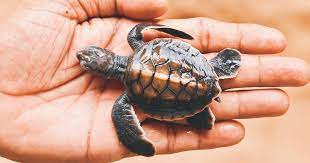
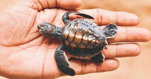
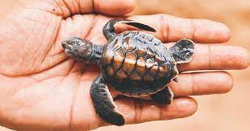
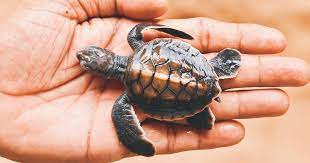

 

The order Chelonii of reptiles includes turtles. Because of this, scientists and environmentalists also refer to them as chelonians. Chelonians are distinguished by their distinctive bony carapace, which grows from their ribs and serves as a shield. They are an ancient species; the earliest proto-turtles appeared more than 220 million years ago, during the Triassic Period. Turtles, tortoises, and terrapins are the three species that make up the order of Chelonii, usually referred to as the Testudines.
In North America, the term "turtles" refers to all chelonians, such as tortoises and terrapins. However, in the UK, the turtle denotes a species of Chelonian that lives in the sea. The term typically refers to chelonians who dwell primarily in the water and have flippers.
The phrase "tortoises" describes non-swimming, land-dwelling chelonians. Unlike the other members of the species that have flippers, they have legs and feet.
The term "terrapin" describes a number of species of small, edible turtles with hard shells that live their entire lives in brackish water.
Sea life is abundant in the waters surrounding Sri Lanka. Even though there are still hazards to marine life in our area, we go above and beyond to mitigate them. Our beaches are home to five of the seven different species of sea turtles. They are all listed as endangered. The following species can be found in the waters around Sri Lanka: